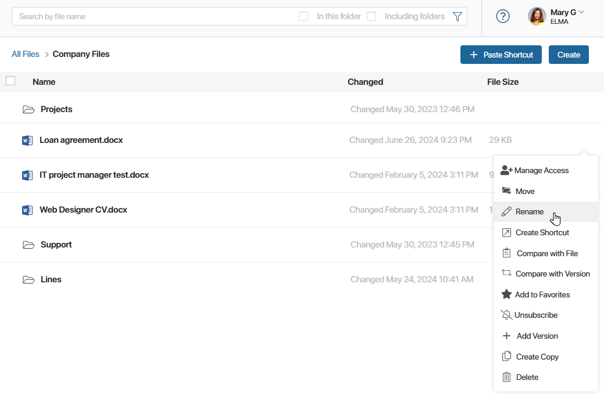
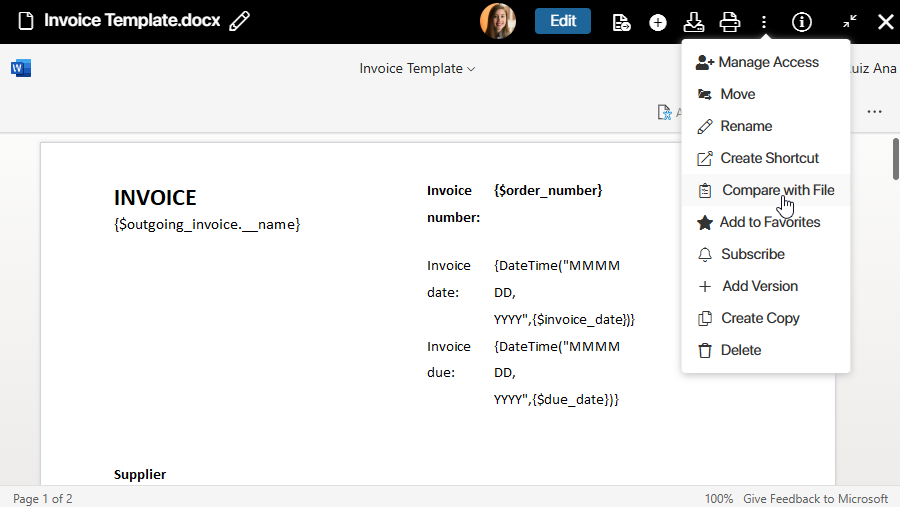

In BRIX, you can work with files in a familiar and convenient way.
You can organize files into folders, rename them, move them to the recycle bin, create shortcuts, and add them to favorites. For each file, you can set up certain access rights, download new versions, and compare one version with another.
In the general file list, you can quickly copy a link to a document, download it to your PC, select multiple files, perform bulk actions, and open a list of other available actions.
Open the actions list
You can open the list of actions you can perform with files in two ways:
- In the list of files.
Click the three dot icon to the right of a file name.

- On the file preview page.
In the Files workspace, click on the file name. In the file view mode, click the three dots in the upper right corner of the page.

Available actions
Actions that you can perform with a file include:
- Manage Access. Determine who will be able to view, edit, or delete the file. Read more about access permissions in Access permissions to files and folders.
- Move. Change the file location by selecting a new folder for it.
- Rename. Edit the file name.
- Create Shortcut. Place a link to the file in the selected folder in the Files workspace. This will help you organize information and quickly find the files you need. Select an option and navigate to the folder where you want to create a shortcut. Then in the upper right corner of the page click +Paste Shortcut or use the Ctrl+V key combination.
- Compare with File. You can upload a file from your PC to compare the current version of the document with it. The option is only available for files in the .doc and .docx format if you have an integration with a file viewing and editing service enabled.
- Compare with Version. If you several versions have been added for the file, you can compare them with each other. The option is only available for files in the .doc and .docx format if you have an integration with a file viewing and editing service enabled. If there are no file versions, the action is not displayed.
- Add to Favorites. To quickly access important files, add them to the Favorites folder.
- Subscribe. Subscribers receive notifications when new messages appear in the file’s activity stream. Please note that the mentioned user will receive a notification even if they are not subscribed to the file.
- Add Version. Upload a new file version to the system.
- Create Copy. You can create a copy of a file and select the folder where it will be stored. The copy has the same access rights as the original file. You can also copy the selected file using the Ctrl+C key combination. To paste it into the desired folder, use Ctrl+V. If the file with this name already exists in the folder, the value (1) will be automatically added to the name.
- Delete. Unused files and their shortcuts can be moved to the recycle bin. In the recycle bin, a user can delete only those entries that they moved there themselves. Only the administrator can empty the entire recycle bin. Before permanent deletion, files and shortcuts in the recycle bin can be restored. Read more about this in the Trash and deleted files article.
Found a typo? Select it and press Ctrl+Enter to send us feedback